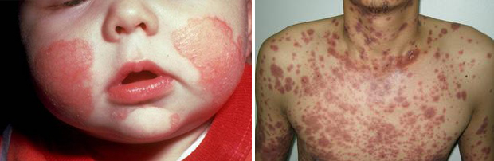
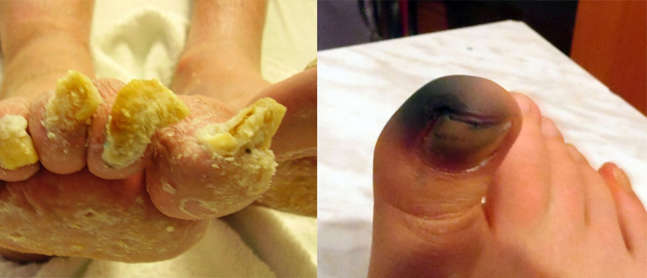

Romano Guardalà
Il principale esperto del Centro di eccellenza in Dermatologia. Esperienza professionale: 27 anni
Editoriale : Secondo le statistiche, il 33% delle persone nel nostro Paese soffre di funghi ai piedi e alle unghie. Le cause possono essere molteplici, dall'indebolimento delle difese immunitarie alle scarpe non adeguate.
Romano Guardalà, esperto di spicco del Centro di Eccellenza in Dermatologia, riferisce che la medicina moderna può aiutarci a sbarazzarci di questa sgradevole malattia, la micosi dei piedi e delle unghie, a casa nostra in un solo mese.
Il principale esperto del Centro di eccellenza in Dermatologia. Esperienza professionale: 27 anni
- Buongiorno, Dott. Guardalà! È vero che un numero così elevato di italiani soffre di funghi delle unghie?
- Sì. L’Italia è tra i paesi con più alta incidenza di infezioni micotiche. Ciò è dovuto all'inquinamento, alle condizioni insalubri dei luoghi pubblici, al disinteresse delle autorità e alla loro negligenza nei confronti della popolazione.
- Dott. Guardalà, Quanto è pericolosa l'infezione di piedi e unghie da parte dei parassiti micotici?
- Molte persone ritengono che i funghi dei piedi e delle unghie siano semplicemente un difetto estetico e non comportino alcun pericolo, in sé. Vediamo se le cose stanno proprio così!
Agli stadi avanzati, il fungo del piede e dell'unghia (il termine medico è onicomicosi) comporta un serio pericolo. L'onicomicosi può causare reazioni allergiche, indebolire il sistema immunitario e portare all'aggravamento delle malattie croniche. In altre parole, le infezioni micotiche aumentano il rischio di sviluppare malattie croniche.
Ciò significa che quello che a prima vista è un disturbo insignificante, la micosi dei piedi e delle unghie, in realtà comporta un pericolo reale. In questo contesto, va notato che
Il fungo non è "un problema minore di piedi e unghie", ma una grave infezione parassitaria che interessa l'intero organismo. I funghi dei piedi e delle unghie sono causati da parassiti che scelgono di rifugiarsi nel nostro corpo. In secondo luogo, il fungo non rappresenta di per sé un pericolo mortale, ma agisce come catalizzatore delle malattie croniche.
In altre parole, se si soffre di problemi cronici all'apparato digerente o al fegato, ad esempio, la presenza di un fungo che colpisce il sistema immunitario aumenta la probabilità di esacerbazione delle malattie croniche.
L'infezione micotica è una delle cause principali di raffreddori frequenti, asma bronchiale e malattie degli organi interni nelle persone di età superiore ai 30 anni. A questa età, l'infezione dell'unghia può causare una dermatite su tutta la superficie del piede. Ecco perché non bisogna rimandare il trattamento dell'infezione. Una volta innescata, la malattia può passare a una forma distrofica totale di onicomicosi, causando complicazioni pericolose per la vita.
Mentre si sviluppano, i funghi producono sostanze tossiche: xantomegnina, penicillina, viomelleina e altre sostanze simili agli antibiotici. Una volta penetrate nell'organismo, queste tossine causano gravi malattie. Guarda le foto: parlano da sole (Attenzione! non adatte a minori o a un pubblico sensibile)
Tossidermia: Colpisce il corpo e le mani
Sindrome di Lyell (necrolisi epidermica tossica, l'80% dei casi porta alla morte)

Se non si prendono misure nelle prime fasi dell'infezione, il fungo penetra nel flusso sanguigno, viene trasportato negli organi interni e, sullo sfondo di un sistema immunitario indebolito, provoca lo sviluppo di complicazioni infettive: lesioni tossico-allergiche del cuore, del fegato, degli organi addominali, dei reni.
Non sottoporsi a trattamento al momento giusto può portare a un esito letale nel 95% dei casi.
Se non si inizia a trattare il fungo nella sua fase iniziale, in pochi anni distruggerà completamente la struttura della lamina ungueale e porterà alla sua perdita.
Conseguenze dell'infezione micotica avanzata della lamina ungueale del pollice

È facile eradicare l'infezione micotica allo stadio iniziale, ma il trattamento agli stadi avanzati richiede più tempo. Il problema principale è che la maggior parte dei pazienti non si rivolge al medico con sufficiente anticipo. Sono convinti che il fungo scomparirà da solo e che le cose torneranno alla normalità. Il fatto è che i parassiti non spariscono da soli. Se non si interviene, il fungo si diffonde, invadendo l'intero piede e le unghie.
Alcuni suggeriscono dei rimedi casalinghi, come quello che segue: "Sciacquare l'unghia con aceto al 2% e ungerla con una goccia di acqua ossigenata". Questi rimedi casuali non servono a nulla. Una procedura del genere non farà che peggiorare la situazione, poiché creerà un ambiente alcalino favorevole alla diffusione dell'infezione fungina nell'organismo. È importante sapere che...

Opzione 1 - Farmaci per via sistemica
Vi svelerò la verità sulle 3 categorie di farmaci che i medici prescrivono, che costano un sacco di soldi, ma che NON PORTANO AD ALCUN RISULTATO. Si limitano a mascherare i sintomi o a consentire all'infezione di rimanere latente, ma con il tempo questa progredisce! Sono possibili anche effetti collaterali: sudorazione eccessiva, reazioni allergiche, ecc.
Opzione 2 - Gocce e smalti per unghie
Spesso questi prodotti causano gravi REAZIONI ALLERGICHE. L'intossicazione dell'organismo si verifica non appena si applica il preparato antimicotico sull'area cutanea. Questo semplicemente perché alcune persone sono più sensibili di altre.
Per trattare il fungo, è necessario uccidere le spore e arrestarne la diffusione nell'organismo. Fino ad oggi, questo tipo di farmaci non esisteva. I rimedi antimicotici avevano solo un effetto cosmetico temporaneo. Solo nel 2017 il nostro Centro ha sviluppato un prodotto in grado di "bloccare" la crescita delle spore fungine, impedendo loro di moltiplicarsi. Il preparato si chiama "" ed è uno spray antimicotico con estratto di climbazolo. La sua formula fa sì che il farmaco penetri in profondità sotto la pelle o l'unghia e uccida il fungo.
Ci sono volute circa 10.000 ore di ricerca e 3 milioni di euro per la produzione di questo prodotto, che il Centro ha messo in piedi appositamente per trovare un farmaco efficace contro il fungo. I ricercatori hanno testato molte formule alla ricerca di sostanze con proprietà terapeutiche.
1. L'efficacia di è stata calcolata secondo il metodo standard (il numero di persone trattate sul totale dei pazienti nel numero di 100 persone che hanno seguito il trattamento):
2. Non sono stati identificati effetti collaterali, comprese le reazioni allergiche.
3. è considerato il prodotto più efficace per combattere i funghi dei piedi e delle unghie.
Oltre che in Italia, il prodotto è stato certificato anche in altri paesi europei e asiatici. Gli studi clinici sono pienamente confermati. In Francia, il numero di persone che sono riuscite a curarsi è ancora più alto. Gli studi clinici in Cina, Giappone e Vietnam sono in fase di completamento. I paesi asiatici mostrano grande interesse per questo spray. Gli studi hanno dimostrato che il prodotto ha la massima efficienza.

Penso che ora i lettori vogliano sapere dove possono acquistare . Ho sentito dire che è possibile acquistarlo con uno SCONTO , è vero?
Dopo lunghe trattative, siamo riusciti a lanciare la campagna "No alle infezioni micotiche". Questo prodotto può essere acquistato con lo sconto del 50% E non miriamo ad arricchirci con questo ritrovato. Desideriamo dare a chiunque, indipendentemente dalla sua situazione finanziaria, l'opportunità di liberarsi dal fungo e di poter condurre una vita sana e attiva! L'obiettivo della campagna è quello di aiutare la gente a curare i piedi e le unghie dai parassiti, che impediscono di condurre una vita normale e rappresentano addirittura una minaccia per la vita stessa. Siamo orgogliosi di essere riusciti a realizzare questo progetto nel nostro Paese! Non esiste nulla di simile in nessun altro paese del mondo!
Per partecipare alla campagna è necessario inserire il proprio Nome/Cognome e numero di contatto sul sito ufficiale del prodotto.
- Dott. Guardalà, vuole lasciare una riflessione ai nostri lettori per concludere l’intervista?
- La sola cosa che non mi stancherò mai di sottolineare è che la micosi dei piedi e delle unghie non è solo un difetto estetico, ma una malattia molto seria che può portare alle conseguenze più gravi. Fate attenzione e curatela prima che sia troppo tardi.
- È possibile ottenerlo dal sito web ufficiale del produttore.


Massimo, per favore, dopo aver iniziato il trattamento, lasci un commento. Vogliamo immettere questo prodotto sul mercato farmaceutico senza costi aggiuntivi e ci servono le recensioni degli utenti.
Cordiali saluti, Romano